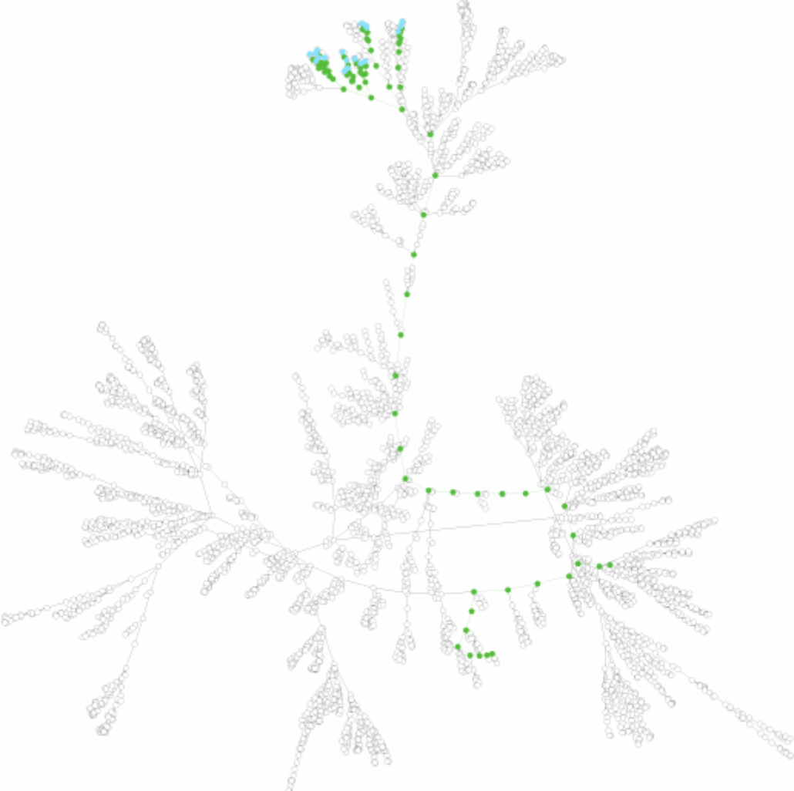
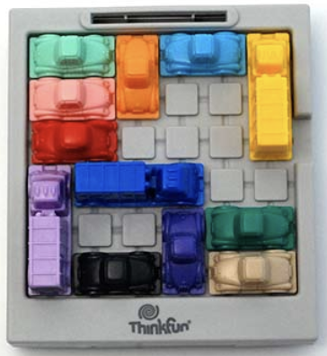
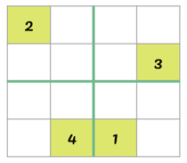
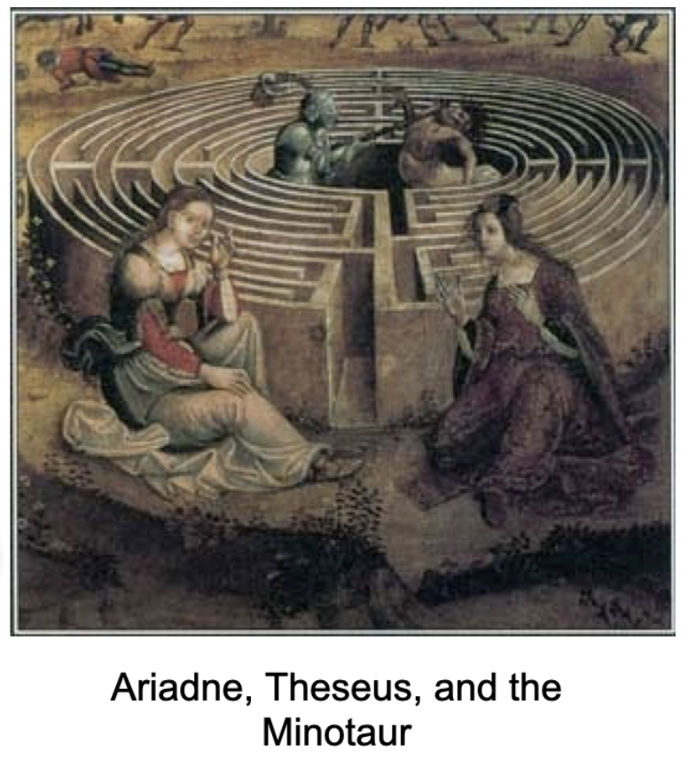
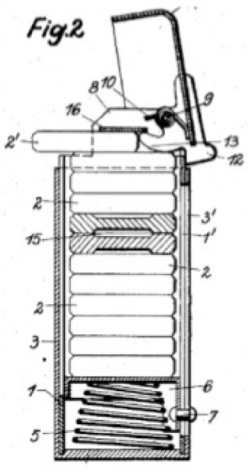
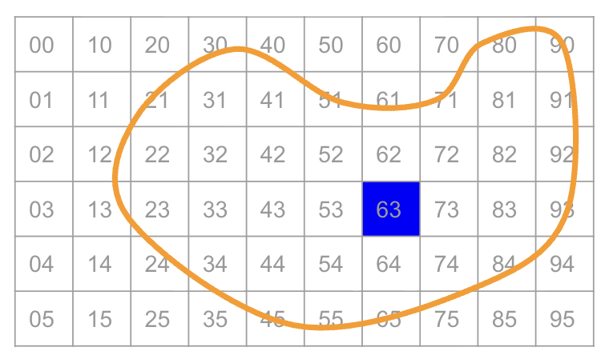
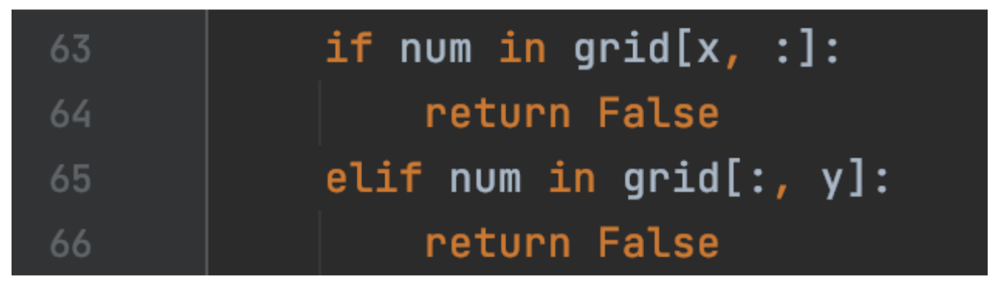
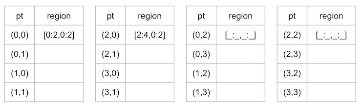

CPSC 203, 2025 W1
November 6, 2025


Graph \(G = (V, E)\)
Path:
How would you represent the game of Sudoku?
Define a graph where every vertex is ________________________, and edge (u,v) means ________________________.
How many neighbors does this vertex have?

Programmatic manifestation of a ________________.
Stack functions:
push(item)pop() \(\rightarrow\) itemDeque functions:
append(item)pop() \(\rightarrow\) item

push(start_vertex)stack is not empty:
pop()w of v:
push(w)Overall strategy:
Need to be able to check whether a candidate entry is valid.
Suppose we have a variable grid, representing the board, and we want to place a value called num, in position (x,y).
Need to check uniqueness in:

Which conditional checks a row?
Which conditional checks a column?
How shall we check a block?
Python tidbit: to query a region in a 2d numpy matrix, just define the bounds on the region and use in.
In the small example below, 2 in grid[0:2,0:2] returns True.
New puzzle: given a location (x,y) how do we define its region?
Given location \((x,y)\), determine the region in which it lives.
a region s:t contains \(x\) if \(s\leq x< t\)
for a \(4\times 4\) grid, the block size is 2

Find the region for point \((x,y)\) in a \(r^2\times r^2\) grid.
Hint: In python, x//r is the integer part of “x divided by r”.
The locations in sudoku are specified by \((x,y)\). As we advance our solution, we can loop over the ranges of \(x\) (\(W\)) and \(y\) (\(H\)), but it would be easier if we could just iterate over the values 0 up to \(W\times H\).
Write a function postup that takes an integer position p as input, and returns an (x,y) position. You may assume that the height and width of the grid is stored in a variable called states.